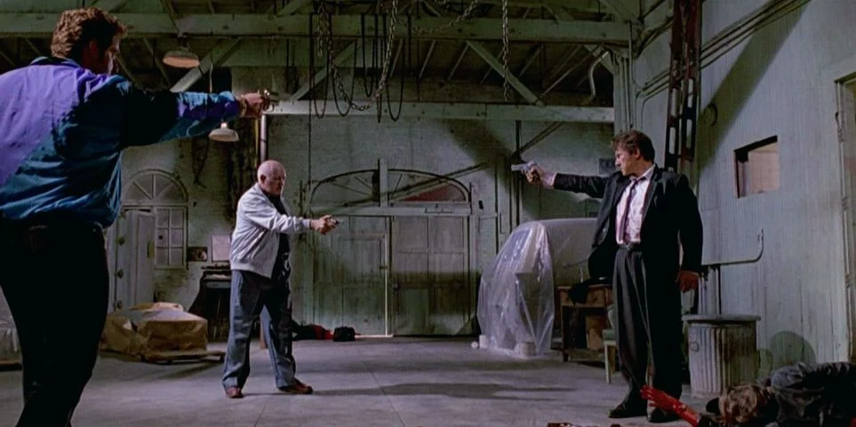
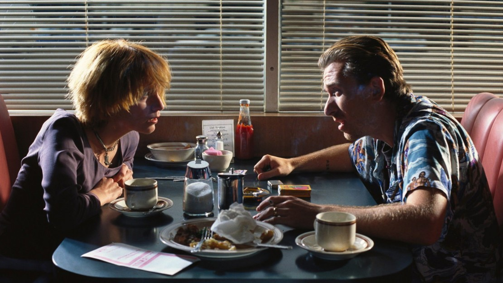
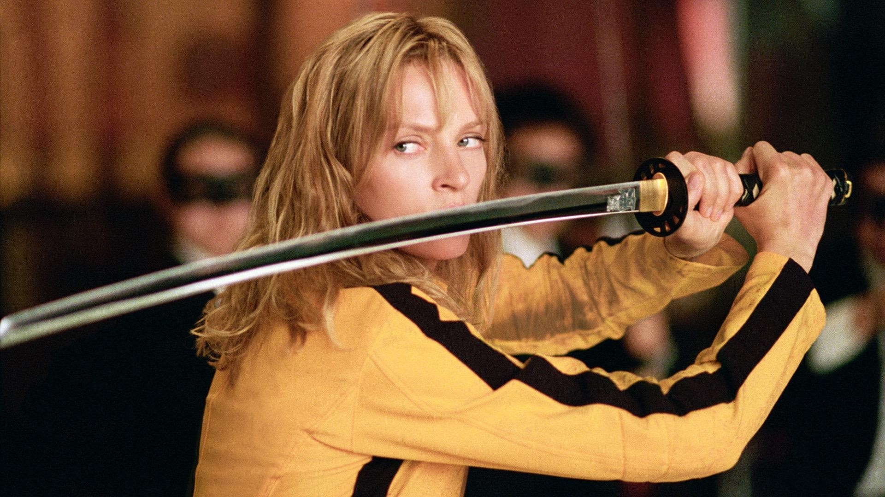

Quentin Tarantino is an established director known for his unique and distinct filmmaking style. Although he is very commercially successful, with some of his movies making over a hundred million dollars at the box office, he is still able to retain nuance and artistry in his films. His movies cover a vast array of genres and styles, but most of his films share some key characteristics that distinguish him from his fellow directors. Each of his films is highly anticipated, as he draws upon the subjects and themes of previous films to produce a fresh storyline.
His unapologetic repetition of themes, skilled use of the camera to create highly tense moments, and his preference for morally ambiguous characters allows fans to instantly recognise the man in his films. Teetering on a fine line between unruly comedy and violent excess, he never strays from his unique style of filmmaking. Instead he continues to develop his artistic voice, juxtaposing interesting, uncanny dialogue and violence in an effort to push the envelope of filmmaking.
Learning the characteristics of a tarantino movie is the first step towards leaning about his filmmaking.
1.Mexican Standoff
A classic gunfighter face off comprising of three or more individuals. It was first introduced in the 1966 Spaghetti Western: The Good the Bad and The Ugly (one of QT's most favorite films). Quentin Tarantino has used it in several of his own films including True Romance, Reservoir Dogs and Pulp Fiction. Almost all of Tarantino's movies feature a moment when two characters hold weapons on each other, therefore allowing them to say some good lines of dialogue before a final bloody showdown.
+

What Is Mexican Standoff?
A Mexican Standoff is a violent confrontation between two or more people in which no party can easily best the other(s) and walk away unscathed. In these situations, an act of aggression directly triggers a corresponding act upon the aggressor. Death or serious harm is guaranteed for all parties involved. Adversaries pointing guns at each other is commonly linked to this trope, though other weapons may be used instead.
The term "Mexican Standoff" originated as a term in a short story by F. Harvey Smith from 1876. “We will call it a stand-off, a Mexican Standoff, you lose your money, but you save your life!” As you can tell from that quote, how we understand the term today is different.
Mexican Standoff Meaning
*A violent confrontation between two or more parties
*No party holds a clear advantage
*Everyone involved is at risk of injury or worse
2.Non-Plot Related Dialogue
Much of the conversation in Tarantino’s films does not drive the plot forward. The seemingly unnecessary dialogue in his movies helps humanize and bring the characters to life. Dialogue irrelevant to the plot is a key component of a Tarantino film.
*In Pulp Fiction, Jules has a long discussion with Vincent about hamburgers.
*Reservoir Dogs opens with a conversation about tipping.
*Inglourious Basterds had almost half an hour of German dialogue before the action began.
+
Quentin Tarantino seem to have a tradition to have entirely non-plot related conversations in his movies. Tarantino writes with a knack for realistic dialogue. His characters talk about real things and often discuss day-to-day proceedings which seem irrelevant to the plot. This brings the characters to life, but what QT also often does is subtly slip that seemingly random dialogue back into the plot.
For example, in Pulp Fiction Jules (Samuel L. Jackson) and Vincent (John Travolta) have the best written conversation about hamburgers in the history of cinema. They compare quarter pounders in America to those in France while on the way to kill some young men who ripped off their boss. The French name for the burger reappears in the dialogue later when they’re “in character” in the apartment of the guys they’ve been sent to whack. The use of such ordinary conversation is hilarious at times, as Tarantino’s characters may be discussing the simplest things while carrying out a contrasting action- like stashing a body or dealing drugs.
In Reservoir Dogs, they have a long conversation on whether you should tip or not in a restaurant.
3.Episodic Structure And Nonlinear Storytelling
Tarantino usually likes to split the movie into different chapters, this is not what most directors do but it is his way of creating movies. An episodic structure makes it more unconventional and interesting for the audience. His movie Pulp Fuction is known for its amazing non-linear storytelling, which tarantino has also used in his other movies like the Hateful Eight.
+

All of Tarantino's movies feature an episodic structure(Except for Jackie Brown). Many of them are literally marked off into different chapters. Reservoir Dogs flashes back to follow three different main characters. Pulp Fiction features three separate stories, along with a prologue and an epilogue. Kill Bill follows the road map set by The Bride's death list, with frequent tangents. Death Proof tells the same story twice, with a different outcome. And Inglourious Basterds features chapter headings, including the immortal "Revenge of the Giant Face".
Non-linear storytelling, also known as disjointed or disrupted narratives, is a technique used where events are portrayed out of chronological order or do not follow a linear pattern. Quentin Tarantino utilizes non-linear narrative in Pulp Fiction primarily as a tool to introduce the characters multiple times, through different character’s perspectives, in all three timelines.
4.Violence and Vengeance
The most well known, and arguably the most important, part of a Tarantino film is the violence. Revenge is the main theme of most Tarantino movies and with it, violence comes as a package. Bloodied hands, over-exaggerated display of uncensored violence and death form the crux of his films.
Violence in Tarantino’s movies are placed in unexpected moments, with scenes of three or more characters pointing guns at each other, supported by an intense scene to set the mood for a gory suspense. It’s evident that he has to power to aestheticize violence even for the non-violent impressed audience.
+

A Tale Of Bloody Vengeance
Vengeance was always present in Tarantino's work. Recall the criminals trying to find the rat in Reservoir Dogs or Marsellus Wallace's Pulp Fiction promise to ''get medieval'' on Zed's ass. But ever since Kill Bill, revenge has been Tarantino's essential cinematic plot point. Inglourious Basterds is centrally the tale of Jewish soldiers performing unspeakable acts on Nazis as a kind of wartime reparation; Django Unchained sets its hero on a mission to punish the men who took away his wife. Even Death Proof follows this model, with the women in the film's second half avenging Stuntman Mike's victims, and implicitly, the whole female gender.
The use of sharp weapons such as a butcher knife which Vernita Greene uses to fight the bride donning a samurai sword in Kill Bill Vol. 1 (2003) and Kill Bill Vol. 2 or even a Bowie knife used by Aldo Raine to cut a swastika in Colonel Hans Landa’s forehead in Inglorious Basterds (2009) is vividly witnessed in the movies.
5.Sountrack That Speaks
Tarantino’s selection of soundtracks have a lasting effect on the viewers. Tarantino is the master of the needle drop and knows how to place an existing song perfectly within a scene. He said in an interview that it is the soundtrack that gets completed before he even starts filming the movie.
+
Quentin Tarantino has a knack for making iconic film moments through his song choices. He never disappoints the audience when it comes to music.
For example in reservoir dogs during the scene where mr.blonde cuts the ear, a catchy pop song was played which went surprisingly well with the scene to create one of the iconic scenes of hollywood. The climax fight in kill bill can be watched on loop for its background score. The title and the ending song of Django Unchained is a treat for the audience. Here, Tarantino uses a song from the past to inform us of what we can expect for the next couple of hours.
Many Quentin Tarantino songs in movies come from other films. It’s done for a greater purpose than just showing off his film knowledge. It educates and informs the audience.